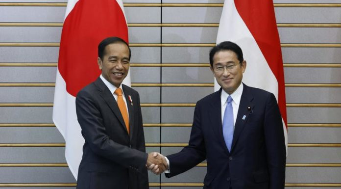

.png)

Indonesia dan Jepang bekerja sama membangun IKN Nusantara. Sebanyak lima memorandum of understanding (MoU) ditandatangani Otorita Ibu Kota Negara (OIKN) dengan badan dan perusahaan Jepang sebagai awal dari kerja sama Indonesia-Jepang dalam proyek pembangunan IKN. Selain itu terdapat pula 24 letter of intent (LoI) yang diserahkan oleh perusahaan Jepang kepada OIKN di hadapan Presiden Joko Widodo.
Nusantara sebagai “laboratorium hidup”, yang memungkinkan para mitra untuk bereksperimen dengan ide-ide dan inovasi baru. Proyek Nusantara merupakan salah satu wujud peran aktif Indonesia dalam mengatasi perubahan iklim, meremajakan keanekaragaman hayati, dan mencapai tujuan pembangunan berkelanjutan atau sustainable development goals (SDGs). Executive Senior Vice President Japan International Cooperation Agency (JICA) Yamada Junichi mengatakan bahwa pihaknya memberi dukungan investasi di Indonesia, terutama di IKN. “Investor-investor yang bernaung di bawah JICA siap mendukung investasi di Indonesia, khususnya di IKN dalam bidang infrastruktur seperti revitalisasi Bandara Balikpapan dan juga sektor energi khususnya power supply facilities,” ujar Yamada Junichi. Sementara itu, Chairman of the Board Japan Bank for International Cooperation (JBIC) Tadashi Maeda menyampaikan komitmennya mendukung pembangunan IKN, khususnya untuk mewujudkan IKN sebagai carbon neutral city dengan memfokuskan investasi di bidang energi baru terbarukan seperti hydropower. Terlaksananya agenda ini merupakan satu rangkaian kegiatan dengan agenda-agenda sebelumnya.
Diawali market sounding di Jepang oleh Pemerintah Republik Indonesia pada 27 Februari 2023, yang saat itu OIKN diwakili Dhony Rahajoe, sebagai Wakil Kepala OIKN dan didampingi Deputi Pendanaan dan Investasi Agung Wicaksono. Kemudian ditindaklanjuti pada 1 April 2023, ketika delegasi Jepang yang dipimpin oleh Dr Hiroto Izumi, mantan Special Advisor for Prime Minister, mengunjungi lokasi pembangunan IKN.

.png)

.png)